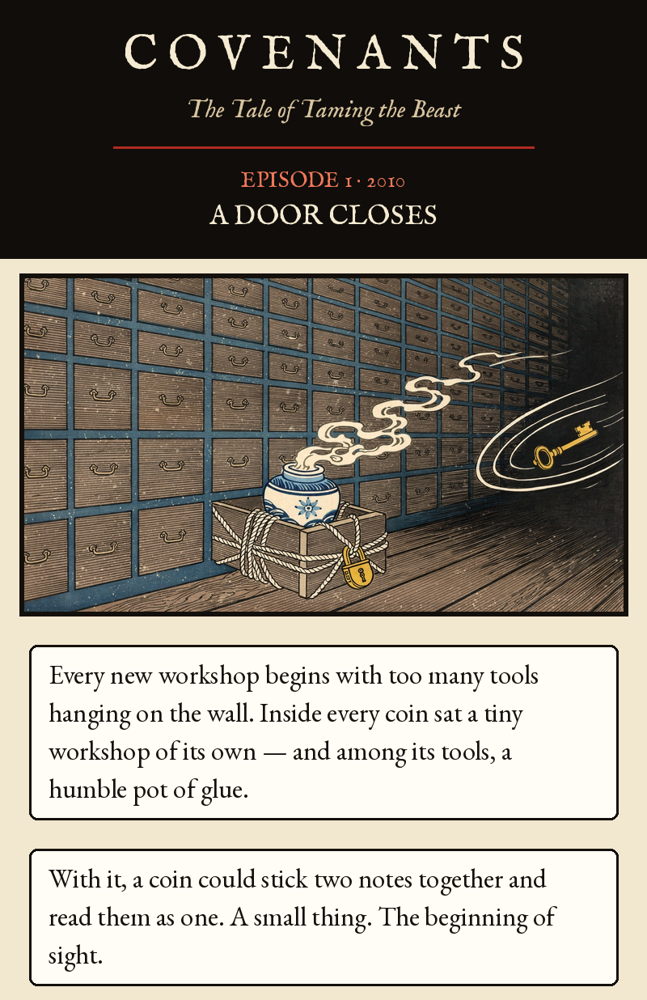
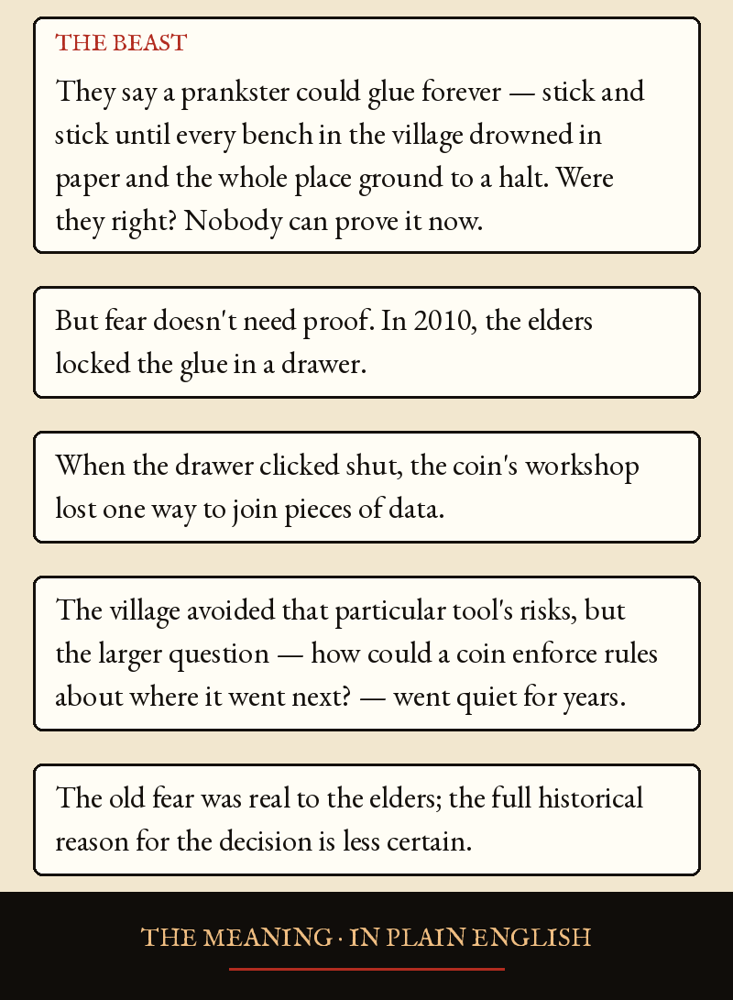
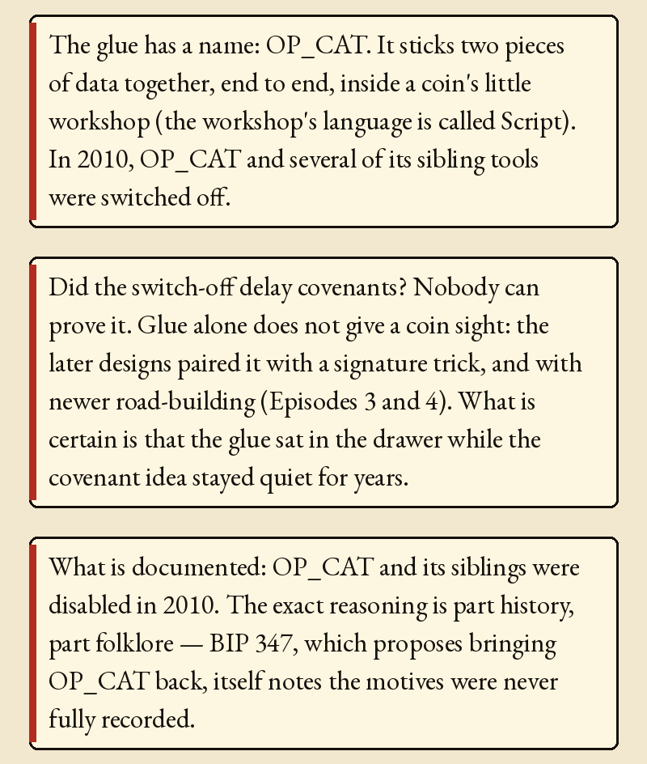
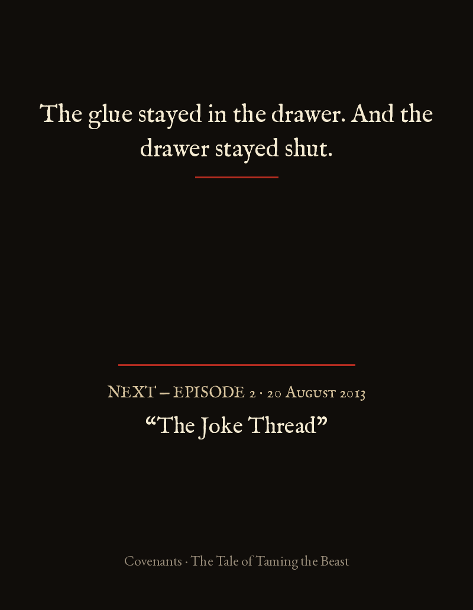

Episode 1 · A Door Closes




Episode 1 · A Door Closes — 2010
Every new workshop begins with too many tools hanging on the wall. Inside every coin sat a tiny workshop of its own — and among its tools, a humble pot of glue. With it, a coin could stick two notes together and read them as one. A small thing. The beginning of sight.
THE BEAST: They say a prankster could glue forever — stick and stick until every bench in the village drowned in paper and the whole place ground to a halt. Were they right? Nobody can prove it now. But fear doesn't need proof. In 2010, the elders locked the glue in a drawer.
When the drawer clicked shut, the coin's workshop lost one way to join pieces of data. The village avoided that particular tool's risks, but the larger question — how could a coin enforce rules about where it went next? — went quiet for years. The old fear was real to the elders; the full historical reason for the decision is less certain.
THE MEANING · IN PLAIN ENGLISH
The glue has a name: OP_CAT. It sticks two pieces of data together, end to end, inside a coin's little workshop (the workshop's language is called Script). In 2010, OP_CAT and several of its sibling tools were switched off.
Did the switch-off delay covenants? Nobody can prove it. Glue alone does not give a coin sight: the later designs paired it with a signature trick, and with newer road-building (Episodes 3 and 4). What is certain is that the glue sat in the drawer while the covenant idea stayed quiet for years.
What is documented: OP_CAT and its siblings were disabled in 2010. The exact reasoning is part history, part folklore — BIP 347, which proposes bringing OP_CAT back, itself notes the motives were never fully recorded.
The glue stayed in the drawer. And the drawer stayed shut.
BIP 347, OP_CAT in Tapscript (specification; proposal is not deployment): https://github.com/bitcoin/bips/blob/master/bip-0347.mediawiki. Historical disabling commit: https://github.com/bitcoin/bitcoin/commit/4bd188c4383d6e614e18f79dc337fbabe8464c82 — dated Sun 15 Aug 2010 21:05:16 UTC per `git show` on a fresh clone, matching Russell O'Connor's bitcoin-dev post (Jan 2017). BIP 347 describes the common removal rationale as folklore, not established motive.